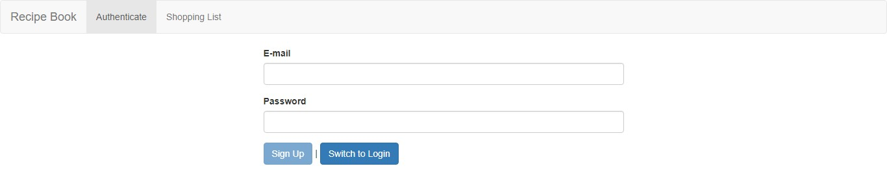

You can visit this web application on https://course-project-c59ce.web.app
Also, you can find the code on https://github.com/z2486357/Recipe-Book-and-Shopping-List
This project was coded in Angular + Firebase.
First, when you enter the website, you will see the login page.
If you didn’t have an account, you can switch to sign up and register it.
The password need to have at least 6 characters
Error message will popup if something wrong.
After login, you can see the recipe and shopping list. At the first time, you didn’t have anything recorded.
So you can add a new recipe to your account by clicking the New Recipe button.
After saving, it will be on your item list.
You can click it for the detail.
And do some management.
For to shopping list, it will put the ingredients of the recipe to the shopping list.
Also you can add ingredient yourself or edit it.
At final, you can save your data to the server.
The authentication will expire after an hour since you login.
During the period, it will let you auto login when you open the page.
So remember to logout after using.
If you are interested, please visit https://github.com/z2486357/Recipe-Book-and-Shopping-List for the code.
Also, you can visit this web application on https://course-project-c59ce.web.app to try it yourself